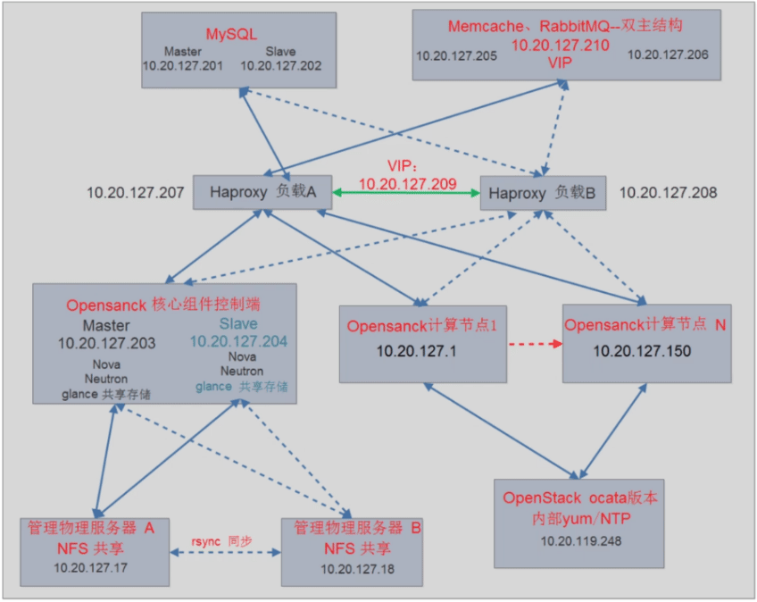

Openstack
TAGS: Linux
OpenStack基础
- 虚拟化基础知识
- OpenStack的出现
- OpenStack基础架构
OpenStack基础架构
组件
Nova #提供计算 Glance #提供镜像 Swift #提供存储(对象存储) Horizon #Web界面 Keystore #认证 Neutron #网络 Cinder #存储(块存储) Heat #虚拟机编排 Ceilometer #计费 Trove #数据库充当服务 Sahara Ironic Zaqa Manila Desinate Barbican ... ...
结构
控制端: controller1, controller2 #如果是物理机使用kvm\vmware\xen实现控制端 haproxy: 1, 2 #访问入口 mysql, rabitmq, memecached, controller mysql: 主从 NAS: 存储镜像 Node节点: node1, node2, node3 #内部网卡，外部网卡
1.基础环境安装
官方文档：https://docs.openstack.org/install-guide/environment.html
2.组件安装
官方文档-最小化组件安装：https://docs.openstack.org/install-guide/openstack-services.html
- Identity service – keystone
- Image service – glance
- Placement service – placement
- Compute service – nova
- Networking service – neutron
- Dashboard – horizon
- Block Storage service – cinder
实践环节
#controller 172.31.7.101 #controller1 172.31.7.102 #controller2 #mysql 172.31.7.103 #mysql-master #haproxy+keepalive 172.31.7.105 #ha1 vip 172.31.7.106 #ha2 #openstack-vip.online.local #vip #node 172.31.7.107 #node1 172.31.7.108 #node2 172.31.7.109 #node3 #openstack-vip.online.local #node节点域名解析/etc/hosts vip
OpenStack实验环境搭建
主要内容
- 基础环境安装
- 操作系统选择
- 网络架构选择
- NTP校时和操作系统基本配置
- OpenStack基础包
- 数据库和消息队列
- 最小化组件安装
- OpenStack核心服务简介
- OpenStack核心服务安装
- 认证服务KeyStone安装
- 归置服务Placement安装
- 镜像服务Glance安装
- 网络服务Neutron安装
- 存储服务Cinder安装
- 计算服务nova安装
- 面板服务Horizon安装
- OpenStack计算节点配置
- 计算节点的基本服务类型
- 计算节点的网络
- 计算节点的安装和配置
基础环境安装
添加openstack controller节点
#源 #https://docs.openstack.org/install-guide/environment-packages.html ### CentOS Stream 9 dnf install centos-release-openstack-<release> dnf install python3-openstackclient openstack-selinux #插件包 #https://docs.openstack.org/install-guide/environment-sql-database.html #https://docs.openstack.org/install-guide/environment-memcached.html yum install -y python2-PyMySQL python-memcached #VIP dns解析 echo "172.31.7.248 openstack-vip.online.local" >> /etc/hosts #keystone #https://docs.openstack.org/keystone/2024.2/install/ dnf install openstack-keystone httpd python3-mod_wsgi ##到已安装完成的controller节点打包keystone配置，推送至新节点 cd /etc/keystone ; tar czvf keystone-controller.tar.gz ./* scp keystone-controller.tar.gz 172.31.7.102:/etc/keystone/ ##新节点解压 cd /etc/keystone; tar xf keystone-controller.tar.gz -C /etc/keystone/ ##Apache HTTP server 编辑/etc/httpd/conf/httpd.conf ServerName 172.31.102:80 ln -s /usr/share/keystone/wsgi-keystone.conf /etc/httpd/conf.d/ systemctl enable --now httpd.service ##验证 #haproyx 配置添加新keystone openstack user list #glance #https://docs.openstack.org/glance/2024.2/install/ yum install openstack-glance mkdir /var/lib/glance/images chown glance.glance /var/lib/glance/images -R echo '172.31.7.105:/data/glance /var/lib/glance/images nfs defaults,_netdev 0 0' >>/etc/fstab mount -a ##到已安装完成的controller节点打包glance配置，推送至新节点 cd /etc/glance ; tar czvf glance-controller.tar.gz ./* scp glance-controller.tar.gz 172.31.7.102:/etc/glance/ ##新节点解压 cd /etc/glance; tar xf glance-controller.tar.gz -C /etc/glance/ systemctl enable --now openstack-glance-api.service tail -f /var/log/glance/api.log ##haproxy配置文件添加glance配置 #placement #https://docs.openstack.org/placement/2024.2/install/ yum install openstack-placement-api ##到已安装完成的controller节点打包placement配置，推送至新节点 cd /etc/placement ; tar czvf placement-controller.tar.gz ./* scp placement-controller.tar.gz 172.31.7.102:/etc/placement/ ##新节点解压 cd /etc/placement; tar xf placement-controller.tar.gz -C /etc/placement/ systemctl restart httpd tail -f /var/log/placement/placement-api.log ##haproxy配置文件添加placement配置 placemnet-status upgrade check #nova #https://docs.openstack.org/nova/2024.2/install/controller-install.html yum -y install openstack-nova-api openstack-nova-conductor \ openstack-nova-novncproxy openstack-nova-scheduler ##到已安装完成的controller节点打包nova配置，推送至新节点 cd /etc/nova ; tar czvf nova-controller.tar.gz ./* scp nova-controller.tar.gz 172.31.7.102:/etc/nova/ ##新节点解压 cd /etc/nova; tar xf nova-controller.tar.gz -C /etc/nova/ ##vim nova.conf 修改server_listen, server_proxyclient_address地址为本机IP ##拷贝controller环境变量 scp admin-openrc demo-openrc 172.31.7.102:/root/ systemctl enable --now \ openstack-nova-api.service \ openstack-nova-scheduler.service \ openstack-nova-conductor.service \ openstack-nova-novncproxy.service tail -f /var/log/nova/*.log ##haproxy配置文件添加nova配置 source admin-openrc nova service-list #neutron #https://docs.openstack.org/neutron/2024.2/install/ #https://docs.openstack.org/neutron/2024.2/install/controller-install-option1-rdo.html yum install openstack-neutron openstack-neutron-ml2 \ openstack-neutron-openvswitch ##到已安装完成的controller节点打包neutron配置，推送至新节点 cd /etc/neutron ; tar czvf neutron-controller.tar.gz ./* scp neutron-controller.tar.gz 172.31.7.102:/etc/neutron/ ##新节点解压 cd /etc/neutron; tar xf neutron-controller.tar.gz -C /etc/neutron/ systemctl enable neutron-server.service \ neutron-openvswitch-agent.service neutron-dhcp-agent.service \ neutron-metadata-agent.service systemctl start neutron-server.service \ neutron-openvswitch-agent.service neutron-dhcp-agent.service \ neutron-metadata-agent.service tail -f /var/log/neutron/*.log ##haproxy配置文件添加neutron配置 neutron agent-list #dashboard #https://docs.openstack.org/horizon/2024.2/install/ yum install -y openstack-dashboard ##到已安装完成的controller节点打包dashboard配置，推送至新节点 cd /etc/openstack-dashboard/ ; tar czvf openstack-dashboard-controller.tar.gz ./* scp dashboard-controller.tar.gz 172.31.7.102:/etc/openstack-dashboard/ ##新节点解压 cd /etc/openstack-dashboard; tar xf openstack-dashboard-controller.tar.gz -C /etc/openstack-bashboard/ ##vim local_settings 修改ALLOWED_HOSTS, OPENSTACK_HOST地址为本机IP systemctl restart httpd tail -f /var/log/httpds/*.log ##haproxy配置文件添加openstack-dashboard配置
最小化组件安装
OpenStack计算节点配置
快速添加openstack node节点
#时间同步 /usr/sbin/update time1.aliyun.com && hwclock -w #yum源 #https://docs.openstack.org/install-guide/environment-packages-rdo.html dnf install centos-release-openstack-<release> dnf install python3-openstackclient openstack-selinux #安装nova #https://docs.openstack.org/nova/2024.2/install/compute-install.html yum install openstack-nova-compute -y #到已安装完成的node节点打包nova配置，推送至新节点 cd /etc/nova ; tar czvf nova-computer.tar.gz ./* scp /etc/nova/nova-computer.tar.gz 172.31.7.108:/etc/nova/ #新节点解压 cd /etc/nova; tar xf nova-computer.tar.gz -C /etc/nova #修改nova.conf中，server_proxyclient_address = <当前node IP地址> #VIP dns解析 echo "172.31.7.248 openstack-vip.oneline.local" >> /etc/hosts #启动脚本 cat <<\EOF> nova-restart.sh #!/bin/bash systemctl restart openstack-nova-compute.service EOF # systemctl start libvirtd openstack-nova-compute # systemctl enable libvirtd openstack-nova-compute #neutron安装 #https://docs.openstack.org/neutron/2024.2/install/compute-install-rdo.html yum install openstack-neutron-openvswitch -y #到已安装完成的node节点打包neutron配置，推送至新节点 cd /etc/neutron ; tar czvf neutron-computer.tar.gz ./* # scp neutron-compute.tar.gz 172.31.7.108:/etc/neutron/ #新节点解压 cd /etc/neutron; tar xf neutron-computer.tar.gz -C /etc/neutron #内核参数 cat <<\EOF> /etc/sysctl.conf net.bridge.bridge-nf-call-iptables=1 net.bridge.bridge-nf-call-ip6tables=1 EOF #启动脚本 cat <<\EOF> neutron-restart.sh systemctl restart neutron-openvswitch-agent.service EOF systemctl enable neutron-openvswitch-agent.service systemctl start neutron-openvswitch-agent.service #启动节点 reboot 1.在脚本的当前目录，需要有nova和neutron的配置压缩包 2.内核参数和资源限制 sysctl.conf 和 limits.conf 3.验证 neutron agent-list nova service-list
OpenStack镜像服务Glance详解
主要内容
- Glance服务架构体系
- Glance镜像管理操作
- OpenStack虚拟机镜像制作
OpenStack虚拟机镜像制作
制作镜像官方文档：https://docs.openstack.org/image-guide/
在宿主机最小化安装系统并配置优化，做完成然后将虚拟机关机，将虚拟机磁盘文件上传至glance即可启动虚拟机。
#安装基础环境 yum install -y qemu-kvm qemu-kvm-tools libvirt virt-manager virt-install #对虚拟机进行重启 yum install acpid systemctl enable acpid #创建磁盘 qemu-img create -f qcow2 /var/lib/libvirt/images/CentOS-7-x86_64.qcow2 10G #安装 virt-install --virt-type kvm --name CentOS-x86_64 --ram 1024 --cdrom=/opt/CentOS-7-x86_64-Minimal-1511.iso \ --disk path=/var/lib/libvirt/images/CentOS-7-x86_64.qcow2 --network bridge=br0 --graphics vnc,listen=0.0.0.0 \ --noautoconsole #vnc客户端连接并安装 #vnc viewer IP:5900 #系统初始化，ssh-key密钥 #关机，复制镜像至控制端 cd /var/lib/libvirt/images scp -P22 CentOS-7-x86_64.qcow2 172.31.7.101:/root/ #控制端上传镜像至glance source admin-openrc openstack image create "CentOS-7-x86_64-template" --file /root/CentOS-7-x86_64.qcow2 --disk-format qcow2 \ --container-format bare --public #验证 openstack iamge list #创建虚拟机
OpenStack高可用配置
主要内容
- OpenStack高可用架构介绍
- 使用Kolla部署高可用OpenStack
- Kolla工具介绍和高可用环境准备
- 部署计算节点
- 其他常用服务介绍
- 新面板Skyline
- 编排服务Heat
- 负载均衡服务Octavia
- Openstack监控
参考：

OpenStack IP规划1: 10.20.112.0/21
| 类别 | 内网 | 备注 |
| 业务VIP | 10.20.112-113.0/21 | 508个业务VIP |
| 数据库VIP | 10.20.114.0/21 | 254个数据库VIP |
| 虚拟机IP | 10.20.115.0-10.20.118.254 | 1016台业务虚拟机 |
| 物理机IP | 10.20.119.1-10.20.119.150 | 150台物理机 |
| HA-LVS虚拟机 | 10.20.119.151-10.20.119.200 | 50个IP |
| openstack服务虚拟机ip | 10.20.119.201-10.20.119.250 | 50台openstack服务虚拟机 |
| 网关 | 10.20.127.254 | 统一默认网关 |
| 10.20.119.240-246/250/251 | 交换机 | |
| 10.20.119.247 | 跳板机 | |
| 10.20.119.248 | NTP-YUM | |
| 10.20.119.249 | ansible/saltstack |
备注：后面3个IP已使用，10.20.119.252/253/254 防火墙使用

OpenStack IP规划2: 10.20.120.0/21
| 类别 | 内网 | 备注 |
| 业务VIP | 10.20.120.0-10.20.121.0/21 | 508个业务VIP |
| 数据库VIP | 10.20.122.0/21 | 254个数据库VIP |
| 虚拟机IP | 10.20.123.0-10.20.126.254 | 1016台业务虚拟机 |
| 物理机IP | 10.20.127.1-10.20.127.150 | 150台物理机 |
| HA-LVS虚拟机 | 10.20.127.151-10.20.127.200 | 50个IP |
| openstack服务虚拟机ip | 10.20.127.201-10.20.127.250 | 50台openstack服务虚拟机 |
| 网关 | 10.20.127.254 | 统一默认网关 |
| 10.20.127.240-246/250/251 | 交换机 | |
| 10.20.127.247 | 跳板机 | |
| 10.20.127.248 | NTP-YUM | |
| 10.20.127.249 | ansible/saltstack |
备注：后面3个IP已使用，10.20.127.252/253/254 防火墙使用
OpenStack IP 虚拟机网络：
| 虚拟机内网IP | 虚拟机外网IP | 虚拟机存储网IP | 物理机 |
| 10.20.0.0/24 | 10.10.0.0/24 | 10.30.0.0/24 |